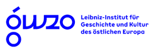

KompetenzwerkD - Netzwerk und Werkstatt§
Das KompetenzwerkD – D steht für alle Facetten der Digitalisierung – ist ein Forschungszentrum (Werkstatt) und ein Kompetenz- und Leistungsverbund (Netzwerk) für die Bereiche Digitale Geisteswissenschaften und Digitales Kulturelles Erbe. Angesiedelt an der SAW Leipzig, ist es tätig für die außeruniversitären, geisteswissenschaftlichen Forschungseinrichtungen in Sachsen:

In enger Zusammenarbeit mit der Sächsischen Landesbibliothek - Staats- und Universitätsbibliothek Dresden (SLUB) und weiteren relevanten Einrichtungen im Freistaat bündelt das Netzwerk die Kompetenz der beteiligten Institute auf dem Gebiet der Digital Humanities und entwickelt sie gezielt strategisch weiter. Im Vordergrund stehen dabei die Unterstützung bei der Nutzung und Übertragung von geeigneten Methoden auf geisteswissenschaftliche Fragestellungen und der Ausbau bereits vorhandener digitaler Forschungskomponenten.
Die Werkstatt, institutionell angebunden an die Digital-Humanities-Abteilung der Akademie bildet den operativen Kern; das Netzwerk den inneren Raum für Transferleistungen.
Unsere Ziele§
- Realisierung von Open Access, Open Data, Open Source und Open Science in der Breite geisteswissenschaftlicher Forschung in Sachsen
- Optimierung der Auffindbarkeit, Zugänglichkeit, Interoperabilität und Nachnutzbarkeit geisteswissenschaftlicher Forschungsdaten (FAIR-Data-Prinzipien)
- Bündelung lokaler Kompetenzen und methodischen Know-Hows in den Digital Humanities
- Aufbau langfristig stabiler digitaler Angebote
- Ressourcenvernetzung
| |
|---|
| Diese Maßnahme wird mitfinanziert durch Steuermittel auf der Grundlage des vom Sächsischen Landtag beschlossenen Haushalts. |